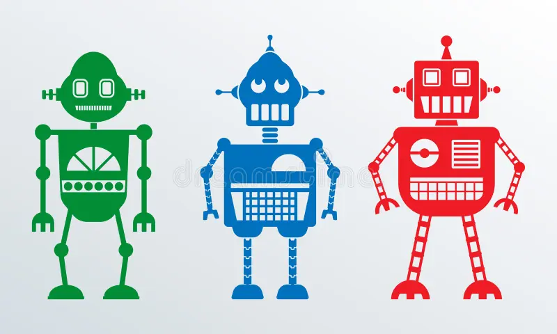

História do Logo da Android
Poucos sabem mas o mascote do Android – aquele simpático robozinho verde – é uma criação da designer Irina Blok.
.jpg)
De acordo com o New York Times, ela trabalhou no Google durante o ano de 2007, ano que o Google tinha planos adiantados para estrear sua plataforma móvel e precisava de um símbolo para identificá-la junto aos consumidores.
Como surgiu
“Blok e seus colegas foram orientados a criar um olhar para o software – algo que os consumidores poderiam identificar facilmente. O logotipo deveria envolver um robô e assim ela estudou brinquedos de ficção científica e filmes de espaço – qualquer coisa que pudesse ajudá-la a criar um personagem. No final, ela se inspirou-se em pictogramas do homem universal e uma mulher, que muitas vezes aparecem nas portas de banheiros. Ela então desenhou um robô despido com um torso separado e uma cabeça com antenas”, diz a publicação.
Em seu site oficial, Blok complementa que o robozinho verde era parte da campanha de lançamento no qual iria funcionar como o código aberto da plataforma, permitindo que a comunidade de desenvolvedores pudessem estabelecer a identidade para o novo produto e gerar entusiasmo entre os engenheiros.
“Inicialmente, o logotipo foi feito para comunidade de desenvolvedores, mas rapidamente ganhou a atenção dos consumidores com milhões de pessoas criando suas próprias versões do logotipo a cada dia”, disse ela. “Nós decidimos que seria um logotipo de colaboração que todos no mundo poderia personalizar. Isso foi muito ousado”.
Blok atualmente trabalha na Edmodo, uma rede social para alunos e professores, e diz que o logotipo pode ser comparado a criação de um filho: “Você dá a vida para essa pessoa, e então eles têm uma vida própria.”